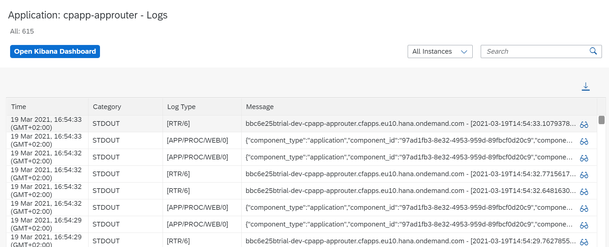
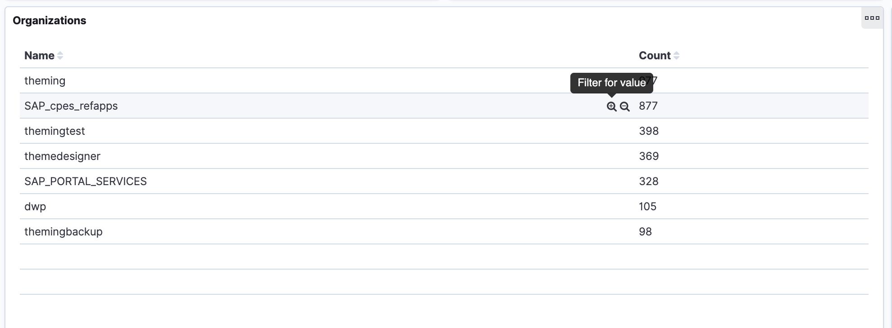
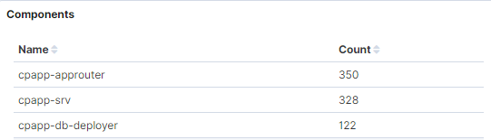

Add the Application Logging Service
Additional Documentation
Access Logs
Access Logs from Terminal
Display recent logs:
cf logs --recent <appname>
Follow logs live:
cf logs <appname>
(Choose Ctrl+C to quit.)
Access Logs from SAP BTP Cockpit
- Go to your subaccount in SAP BTP cockpit.
- Choose Cloud Foundry → Spaces.
- Choose your space.
- Choose on the application whose logs you want to access.
-
Choose Logs.

Only the recent logs are displayed.
Analyze Logs via Kibana
- Go to your subaccount in SAP BTP cockpit.
- Choose Cloud Foundry → Spaces.
- Choose your space.
- Choose on the application whose logs you want to access.
- Choose Logs.
- Choose Open Kibana Dashboard.
Kibana shows all logs
Although the Open Kibana Dashboard link is placed on the logs view of a particular application, it will give you access to the logs of all spaces where you have the required permission.
Logging Service
Logs are only kept for a short period and won't be visible in Kibana without the Logging Service. By binding the Logging Service to your application, logs will be kept for longer and will be available for further analysis via Kibana.
It's suggested to enable the Logging Service for all applications, so that error analysis will be possible even some hours after the incident.
In our experience, the development plan wasn't sufficient for test scenarios. Probably, its ok for personal development spaces. However, this tutorial uses the standard plan to be on the safe side.
Add an instance for the logging service to the resources section of your mta.yaml:
...
resources:
...
- name: cpapp-logs
type: org.cloudfoundry.managed-service
parameters:
service: application-logs
service-plan: lite
...
resources:
...
- name: cpapp-logs
type: org.cloudfoundry.managed-service
parameters:
service: application-logs
service-plan: standard
Bind the logging service instance to all modules of the mta.yaml:
_schema-version: '3.1'
...
modules:
...
- name: cpapp-srv
...
requires:
...
- name: cpapp-logs
_schema-version: '3.1'
...
modules:
...
- name: cpapp-db-deployer
...
requires:
...
- name: cpapp-logs
Test It
-
Build the MTAR file and deploy it to your Cloud Foundry space:
mbt build -t ./ cf deploy cpapp_1.0.0.mtar -
Open Kibana after successful deployment. Your org should now be visible in the Kibana dashboard:

-
Choose the ( + ) icon to filter for it.
- The filter is added to the filter bar on the top of the screen and gets applied on the dashboard.
-
You should see your newly applied applications:

You can also browse all logs using the Discover button (compass icon) on the left navigation bar. The available fields are displayed on the left side of the screen. You can add fields to the message display or quickly filter for any of the top values.
The time filter is on the right top of the screen. Don't forget to press the Refresh button.